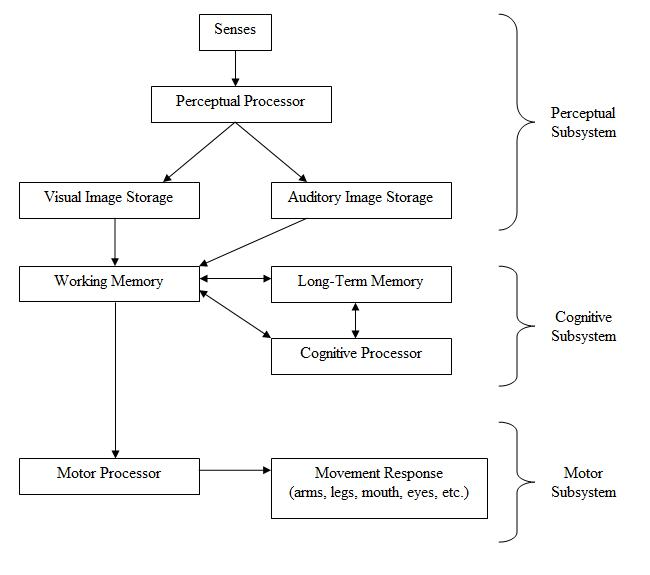

There are a variety of usability evaluation methods. Certain methods use data from users, while others rely on usability experts. There are usability evaluation methods for all stages of design and development, from product definition to final design modifications. When choosing a method, consider cost, time constraints, and appropriateness. For a brief overview of methods, see Comparison of usability evaluation methods or continue reading below. Usability methods can be further classified into the subcategories below.
Evaluation Methods
There are a variety of usability evaluation methods. Certain methods use data from users, while others rely on usability experts. There are usability evaluation methods for all stages of design and development, from product definition to final design modifications. When choosing a method, consider cost, time constraints, and appropriateness. For a brief overview of methods, see Comparison of usability evaluation methods or continue reading below. Usability methods can be further classified into the subcategories below.
Cognitive Modeling Methods
There are a variety of usability evaluation methods. Certain methods use data from users, while others rely on usability experts. There are usability evaluation methods for all stages of design and development, from product definition to final design modifications. When choosing a method, consider cost, time constraints, and appropriateness. For a brief overview of methods, see Comparison of usability evaluation methods or continue reading below. Usability methods can be further classified into the subcategories below.
Cognitive Modeling Methods
Cognitive modeling involves creating a computational model to estimate how long it takes people to perform a given task. Models are based on psychological principles and experimental studies to determine times for cognitive processing and motor movements. Cognitive models can be used to improve user interfaces or predict problem errors and pitfalls during the design process. A few examples of cognitive models include:
Parallel design
With parallel design, several people create an initial design from the same set of requirements. Each person works independently, and when finished, shares concepts with the group. The design team considers each solution, and each designer uses the best ideas to further improve their own solution. This process helps generate many different, diverse ideas, and ensures that the best ideas from each design are integrated into the final concept. This process can be repeated several times until the team is satisfied with the final concept.
GOMS
GOMS stands for goals, operator, methods, and selection rules. It is a family of techniques that analyzes the user complexity of interactive systems. Goals are what the user must accomplish. An operator is an action performed in pursuit of a goal. A method is a sequence of operators that accomplish a goal. Selection rules specify which method satisfies a given goal, based on context.
Human processor model
Sometimes it is useful to break a task down and analyze each individual aspect separately. This helps the tester locate specific areas for improvement. To do this, it is necessary to understand how the human brain processes information. A model of the human processor is shown below.
Many studies have been done to estimate the cycle times, decay times, and capacities of each of these processors. Variables that affect these can include subject age, aptitudes, ability, and the surrounding environment. For a younger adult, reasonable estimates are:
| Parameter | Mean | Range |
|---|---|---|
| Eye movement time | 230 ms | 70-100 ms |
| Decay half-life of visual image storage | 200 ms | 90-1000 ms |
| Perceptual processor cycle time | 100 ms | 50-200 ms |
| Cognitive processor cycle time | 70 ms | 25-170 ms |
| Motor processor cycle time | 70 ms | 30-100 ms |
| Effective working memory capacity | 2 items | 2-3 items |
Long-term memory is believed to have an infinite capacity and decay time.
Keystroke level modeling
Keystroke level modeling is essentially a less comprehensive version of GOMS that makes simplifying assumptions in order to reduce calculation time and complexity.
Inspection Methods
These usability evaluation methods involve observation of users by an experimenter, or the testing and evaluation of a program by an expert reviewer. They provide more quantitative data as tasks can be timed and recorded.
Card sorts
Card sorting is a way to involve users in grouping information for a website's usability review. Participants in a card sorting session are asked to organize the content from a Web site in a way that makes sense to them. Participants review items from a Web site and then group these items into categories. Card sorting helps to learn how users think about the content and how they would organize the information on the Web site. Card sorting helps to build the structure for a Web site, decide what to put on the home page, and label the home page categories. It also helps to ensure that information is organized on the site in a way that is logical to users.
Tree tests
Tree testing is a way to evaluate the effectiveness of a website's top-down organization. Participants are given "find it" tasks, then asked to drill down through successive text lists of topics and subtopics to find a suitable answer. Tree testing evaluates the findability and labeling of topics in a site, separate from its navigation controls or visual design.
Ethnography
Ethnographic analysis is derived from anthropology. Field observations are taken at a site of a possible user, which track the artifacts of work such as Post-It notes, items on desktop, shortcuts, and items in trash bins. These observations also gather the sequence of work and interruptions that determine the user's typical day.
Heureistic evaluation
Heuristic evaluation is a usability engineering method for finding and assessing usability problems in a user interface design as part of an iterative design process. It involves having a small set of evaluators examining the interface and using recognized usability principles (the "heuristics"). It is the most popular of the usability inspection methods, as it is quick, cheap, and easy. Heuristic evaluation was developed to aid in the design of computer user-interface design. It relies on expert reviewers to discover usability problems and then categorize and rate them by a set of principles (heuristics.) It is widely used based on its speed and cost-effectiveness. Jakob Nielsen's list of ten heuristics is the most commonly used in industry. These are ten general principles for user interface design. They are called "heuristics" because they are more in the nature of rules of thumb than specific usability guidelines.
- Visibility of system status: The system should always keep users informed about what is going on, through appropriate feedback within reasonable time.
- Match between system and the real world: The system should speak the users' language, with words, phrases and concepts familiar to the user, rather than system-oriented terms. Follow real-world conventions, making information appear in a natural and logical order.
- User control and freedom: Users often choose system functions by mistake and will need a clearly marked "emergency exit" to leave the unwanted state without having to go through an extended dialogue. Support undo and redo.
- Consistency and standards: Users should not have to wonder whether different words, situations, or actions mean the same thing. Follow platform conventions.
- Error prevention: Even better than good error messages is a careful design that prevents a problem from occurring in the first place. Either eliminate error-prone conditions or check for them and present users with a confirmation option before they commit to the action.
- Recognition rather than recall: Minimize the user's memory load by making objects, actions, and options visible. The user should not have to remember information from one part of the dialogue to another. Instructions for use of the system should be visible or easily retrievable whenever appropriate.
- Flexibility and efficiency of use: Accelerators—unseen by the novice user—may often speed up the interaction for the expert user such that the system can cater to both inexperienced and experienced users. Allow users to tailor frequent actions.
- Aesthetic and minimalist design: Dialogues should not contain information that is irrelevant or rarely needed. Every extra unit of information in a dialogue competes with the relevant units of information and diminishes their relative visibility.
- Help users recognize, diagnose, and recover from errors: Error messages should be expressed in plain language (no codes), precisely indicate the problem, and constructively suggest a solution.
- Help and documentation: Even though it is better if the system can be used without documentation, it may be necessary to provide help and documentation. Any such information should be easy to search, focused on the user's task, list concrete steps to be carried out, and not be too large.
Thus, by determining which guidelines are violated, the usability of a device can be determined.
Usability inspection
Usability inspection is a review of a system based on a set of guidelines. The review is conducted by a group of experts who are deeply familiar with the concepts of usability in design. The experts focus on a list of areas in design that have been shown to be troublesome for users.
Pluralistic inspection
Pluralistic Inspections are meetings where users, developers, and human factors people meet together to discuss and evaluate step by step of a task scenario. As more people inspect the scenario for problems, the higher the probability to find problems. In addition, the more interaction in the team, the faster the usability issues are resolved.
Consistency inspection
In consistency inspection, expert designers review products or projects to ensure consistency across multiple products to look if it does things in the same way as their own designs.
Activity analysis
Activity analysis is a usability method used in preliminary stages of development to get a sense of situation. It involves an investigator observing users as they work in the field. Also referred to as user observation, it is useful for specifying user requirements and studying currently used tasks and subtasks. The data collected are qualitative and useful for defining the problem. It should be used when you wish to frame what is needed, or "What do we want to know?"
Inquiry Methods
The following usability evaluation methods involve collecting qualitative data from users. Although the data collected is subjective, it provides valuable information on what the user wants.
Task analysis
Task analysis means learning about users' goals and users' ways of working. Task analysis can also mean figuring out what more specific tasks users must do to meet those goals and what steps they must take to accomplish those tasks. Along with user and task analysis, a third analysis is often used: understanding users' environments (physical, social, cultural, and technological environments).
Focus groups
A focus group is a focused discussion where a moderator leads a group of participants through a set of questions on a particular topic. Although typically used as a marketing tool, Focus Groups are sometimes used to evaluate usability. Used in the product definition stage, a group of 6 to 10 users are gathered to discuss what they desire in a product. An experienced focus group facilitator is hired to guide the discussion to areas of interest for the developers. Focus groups are typically videotaped to help get verbatim quotes, and clips are often used to summarize opinions. The data gathered is not usually quantitative, but can help get an idea of a target group's opinion.
Questionnaires/surveys
Surveys have the advantages of being inexpensive, require no testing equipment, and results reflect the users' opinions. When written carefully and given to actual users who have experience with the product and knowledge of design, surveys provide useful feedback on the strong and weak areas of the usability of a design. This is a very common method and often does not appear to be a survey, but just a warranty card.
Prototyping Methods
It is often very difficult for designers to conduct usability tests with the exact system being designed. Cost constraints, size, and design constraints usually lead the designer to creating a prototype of the system. Instead of creating the complete final system, the designer may test different sections of the system, thus making several small models of each component of the system. The types of usability prototypes may vary from using paper models, index cards, hand drawn models, or storyboards. Prototypes are able to be modified quickly, often are faster and easier to create with less time invested by designers and are more apt to change design; although sometimes are not an adequate representation of the whole system, are often not durable and testing results may not be parallel to those of the actual system.
Rapid prototyping
Rapid prototyping is a method used in early stages of development to validate and refine the usability of a system. It can be used to quickly and cheaply evaluate user-interface designs without the need for an expensive working model. This can help remove hesitation to change the design, since it is implemented before any real programming begins. One such method of rapid prototyping is paper prototyping.
Testing Methods
These usability evaluation methods involve testing of subjects for the most quantitative data. Usually recorded on video, they provide task completion time and allow for observation of attitude. Regardless to how carefully a system is designed, all theories must be tested using usability tests. Usability tests involve typical users using the system (or product) in a realistic environment. Observation of the user's behavior, emotions, and difficulties while performing different tasks, often identify areas of improvement for the system.
Metrics
While conducting usability tests, designers must use usability metrics to identify what it is they are going to measure, or the usability metrics. These metrics are often variable, and change in conjunction with the scope and goals of the project. The number of subjects being tested can also affect usability metrics, as it is often easier to focus on specific demographics. Qualitative design phases, such as general usability (can the task be accomplished?), and user satisfaction are also typically done with smaller groups of subjects. Using inexpensive prototypes on small user groups provides more detailed information, because of the more interactive atmosphere, and the designer's ability to focus more on the individual user. As the designs become more complex, the testing must become more formalized. Testing equipment will become more sophisticated and testing metrics become more quantitative. With a more refined prototype, designers often test effectiveness, efficiency, and subjective satisfaction, by asking the user to complete various tasks. These categories are measured by the percent that complete the task, how long it takes to complete the tasks, ratios of success to failure to complete the task, time spent on errors, the number of errors, rating scale of satisfactions, number of times user seems frustrated, etc. Additional observations of the users give designers insight on navigation difficulties, controls, conceptual models, etc. The ultimate goal of analyzing these metrics is to find/create a prototype design that users like and use to successfully perform given tasks. After conducting usability tests, it is important for a designer to record what was observed, in addition to why such behavior occurred and modify the model according to the results. Often it is quite difficult to distinguish the source of the design errors, and what the user did wrong. However, effective usability tests will not generate a solution to the problems, but provide modified design guidelines for continued testing.
Remote usability testing
Remote usability testing (also known as unmoderated or asynchronous usability testing) involves the use of a specially modified online survey, allowing the quantification of user testing studies by providing the ability to generate large sample sizes, or a deep qualitative analysis without the need for dedicated facilities. Additionally, this style of user testing also provides an opportunity to segment feedback by demographic, attitudinal and behavioral type. The tests are carried out in the user's own environment (rather than labs) helping further simulate real-life scenario testing. This approach also provides a vehicle to easily solicit feedback from users in remote areas. There are two types, quantitative or qualitative. Quantitative use large sample sized and task based surveys. These types of studies are useful for validating suspected usability issues. Qualitative studies are best used as exploratory research, in small sample sizes but frequent, even daily iterations. Qualitative usually allows for observing respondent's screens and verbal think aloud commentary (Screen Recording Video, SRV), and for a richer level of insight also include the webcam view of the respondent (Video-in-Video, ViV, sometimes referred to as Picture-in-Picture, PiP)
Remote usability testing for mobile devices
The growth in mobile and associated platforms and services (e.g.: Mobile gaming has experienced 20x growth in 2010-2012) has generated a need for unmoderated remote usability testing on mobile devices, both for websites but especially for app interactions. One methodology consists of shipping cameras and special camera holding fixtures to dedicated testers, and having them record the screens of the mobile smart-phone or tablet device, usually using an HD camera. A drawback of this approach is that the finger movements of the respondent can obscure the view of the screen, in addition to the bias and logistical issues inherent in shipping special hardware to selected respondents. A newer approach uses a wireless projection of the mobile device screen onto the computer desktop screen of the respondent, who can then be recorded through their webcam, and thus a combined Video-in-Video view of the participant and the screen interactions viewed simultaneously while incorporating the verbal think aloud commentary of the respondents.
Thinking outloud
The Think aloud protocol is a method of gathering data that is used in both usability and psychology studies. It involves getting a user to verbalize their thought processes as they perform a task or set of tasks. Often an instructor is present to prompt the user into being more vocal as they work. Similar to the Subjects-in-Tandem method, it is useful in pinpointing problems and is relatively simple to set up. Additionally, it can provide insight into the user's attitude, which can not usually be discerned from a survey or questionnaire.
RITE method
Rapid Iterative Testing and Evaluation (RITE) is an iterative usability method similar to traditional "discount" usability testing. The tester and team must define a target population for testing, schedule participants to come into the lab, decide on how the users behaviors will be measured, construct a test script and have participants engage in a verbal protocol (e.g., think aloud). However it differs from these methods in that it advocates that changes to the user interface are made as soon as a problem is identified and a solution is clear. Sometimes this can occur after observing as few as 1 participant. Once the data for a participant has been collected the usability engineer and team decide if they will be making any changes to the prototype prior to the next participant. The changed interface is then tested with the remaining users.
Subjects-in-tandem or co-discovery
Subjects-in-tandem (also called co-discovery) is the pairing of subjects in a usability test to gather important information on the ease of use of a product. Subjects tend to discuss the tasks they have to accomplish out loud and through these discussions observers learn where the problem areas of a design are. To encourage co-operative problem-solving between the two subjects, and the attendant discussions leading to it, the tests can be designed to make the subjects dependent on each other by assigning them complementary areas of responsibility (e.g. for testing of software, one subject may be put in charge of the mouse and the other of the keyboard.)
Component-based usability testing
Component-based usability testing is an approach which aims to test the usability of elementary units of an interaction system, referred to as interaction components. The approach includes component-specific quantitative measures based on user interaction recorded in log files, and component-based usability questionnaires.
Other methods
Cognitive walk through
Cognitive walkthrough is a method of evaluating the user interaction of a working prototype or final product. It is used to evaluate the system's ease of learning. Cognitive walk through is useful to understand the user's thought processes and decision making when interacting with a system, specially for first-time or infrequent users.
Benchmarking
Benchmarking creates standardized test materials for a specific type of design. Four key characteristics are considered when establishing a benchmark: time to do the core task, time to fix errors, time to learn applications, and the functionality of the system. Once there is a benchmark, other designs can be compared to it to determine the usability of the system. Many of the common objectives of usability studies, such as trying to understand user behavior or exploring alternative designs, must be put aside. Unlike many other usability methods or types of labs studies, benchmark studies more closely resemble true experimental psychology lab studies, with greater attention to detail on methodology, study protocol and data analysis.
Meta-analysis
Meta-analysis is a statistical procedure to combine results across studies to integrate the findings. This phrase was coined in 1976 as a quantitative literature review. This type of evaluation is very powerful for determining the usability of a device because it combines multiple studies to provide very accurate quantitative support.
Persona
Personas are fictitious characters created to represent a site or product's different user types and their associated demographics and technographics. Alan Cooper introduced the concept of using personas as a part of interactive design in 1998 in his book The Inmates Are Running the Asylum, but had used this concept since as early as 1975. Personas are a usability evaluation method that can be used at various design stages. The most typical time to create personas is at the beginning of designing so that designers have a tangible idea of who the users of their product will be. Personas are the archetypes that represent actual groups of users and their needs, which can be a general description of person, context, or usage scenario. This technique turns marketing data on target user population into a few physical concepts of users to create empathy among the design team, with the final aim of tailoring a product more closely to how the personas will use it. To gather the marketing data that personas require, several tools can be used, including online surveys, web analytics, customer feedback forms, and usability tests, and interviews with customer-service representatives.